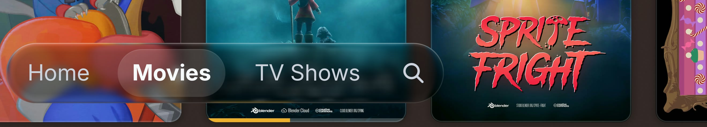
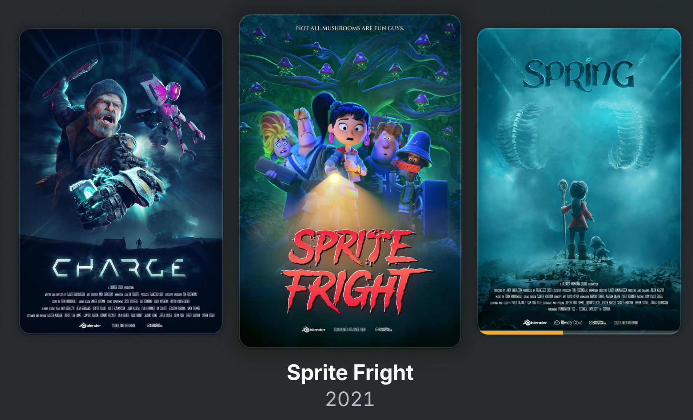
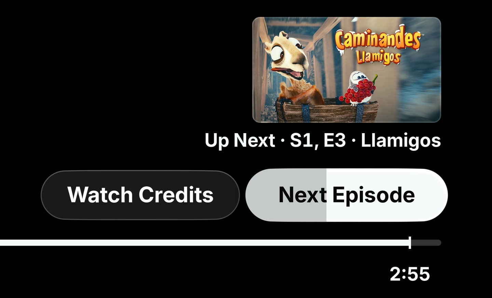

First-time installation
Install on your LG TV
Use your computer to install PlxNative through LG Developer Mode. No root required.
Renew Developer Mode periodically to keep installed apps.
Step-by-step installation →PlxNative is an independent client for Plex Media Server. Explore your library through a fast, fluid interface designed for LG webOS TVs.

Browsing my Plex library on my 2019 LG TV felt slower than it needed to, even though the picture still looked great.
I wanted an interface that felt quick under the remote and enjoyable to spend time in. PlxNative grew from that idea.
Responsiveness is hard to describe. It is easier to show.
Fast navigation, clear focus, and a bit of delight in the details.

Translucent surfaces keep artwork visible and controls readable.

Clear focus states make remote navigation obvious.

When the credits roll, the next episode is one press away.
PlxNative draws its interface directly on the TV's GPU, without running it in Chromium or a WebView. This keeps browsing light and responsive, even on older LG TVs. Video uses the TV's own hardware decoder.
Rust · OpenGL · Native webOS · Open source
After the initial online sign-in, PlxNative connects directly to your local Plex server, so your library stays available over your home network, even when the internet is down.
From the community
The most responsive and speedy Plex experience I've had on any platform
Read the original comment on GitHub →Start with a regular LG webOS TV, or use your existing Homebrew Channel setup.
First-time installation
Use your computer to install PlxNative through LG Developer Mode. No root required.
Renew Developer Mode periodically to keep installed apps.
Step-by-step installation →Already have Homebrew Channel?
Open Homebrew Channel on your TV, find PlxNative, and select Install. Get future updates there too.
Open in the catalogue →LG Content Store: I'm exploring an official release. Availability and timing aren't confirmed.
Built for webOS 4.0 and newer. Compatibility can vary by TV model.
Requires a Plex account and Plex Media Server. Internet access is needed for initial sign-in; local playback works without it.
PlxNative uses the codecs available on your television and falls back to Plex transcoding when needed.
At first launch, PlxNative asks whether you'd like to share crash reports and usage analytics. You can opt in to either one, both, or neither.